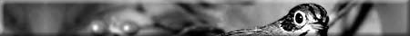
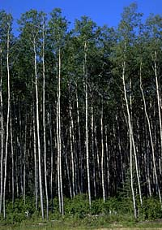
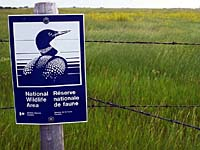

Habitat Requirements
Long Journey
Forest Harvesting
Ovenbird and Us

Seiurus aurocapillus (also known as "Ovenbird")
 The ovenbird belongs to the warbler family of songbirds. It stays mainly on the forest floor where it forages and builds its nest. The ovenbird is easy to hear, but seldom seen. Ovenbirds winter in Mexico, Central America and northern parts of South America. They return to Saskatchewan around the middle of May. Like most songbirds, ovenbirds are territorial and return to the same areas each year. While in North America, mature hardwood stands are their favourite habitat. |
Early mornings in June are the best time to listen for ovenbirds. Their six-syllable call increases in volume from the first note to the last. The ovenbird's call sounds like the words "tea-cher, Tea-cher, TEACHER!" Ovenbirds are named for their elaborate nests. These nests are built with dry leaves, sprigs of grass, rootlets and moss. Ovenbird nests are shaped like a Dutch oven. |
Ovenbirds live in mature deciduous and mixedwood stands. They are most numerous where the forest floor is shaded by a thick canopy of trees. Shade inhibits the growth of shrubs and grasses and provides ovenbirds with ideal habitat for nesting and foraging. |
Ovenbirds eat insect larvae and worms. These invertebrates thrive where layers of leaves have fallen and decomposed. The top part of this soil profile is called leaf litter. Humus is found beneath the decaying leaves. |

Ovenbirds are vulnerable to predation along the forest's edge. To obtain food and avoid predators, they live in the forest's interior. |
Many songbirds nest in Canada and winter in tropical lands. Scientists call these birds neotropical migrants. Besides flying thousands of kilometres, these birds must face habitat loss on two fronts. Large portions of the rainforest in South and Central America are being cleared and burned to make room for mines, settlements and ranches. In Canada, past logging operations were conducted without concern for the needs of wildlife. This activity has reduced the breeding habitat of many birds. At last count, 79 species of neotropical birds nest in the boreal forest. |
Forest Harvesting and the Ovenbird

When mature aspen and mixedwood stands are harvested, ovenbird habitat is removed. While this seems cruel, we must remember that the forest is alive. As new trees in cutovers grow older, new ovenbird habitat will be created. Forest planners are now beginning to understand the needs of wildlife. When they design cutovers that have regular shapes, ovenbirds benefit. This practice results in the least amount of forest edge bordering cutovers. Less forest edge helps to improve the survival of all nesting songbirds. |
 Canada's Green Plan for the Environment has sparked interest in the ecology of forest birds. Scientists want to know how birds contribute to the health of our forest ecosystems. |
One study done by the Canadian Wildlife Service looked at the link between songbirds and spruce budworms (eggs shown left). Five species of birds that feed on budworms were found to keep this pest in check. This research suggests that forest birds are not a luxury - they are essential to the forest's health. By conserving habitat for ovenbirds, forest managers hope to satisfy the habitat requirements of many beneficial birds. |